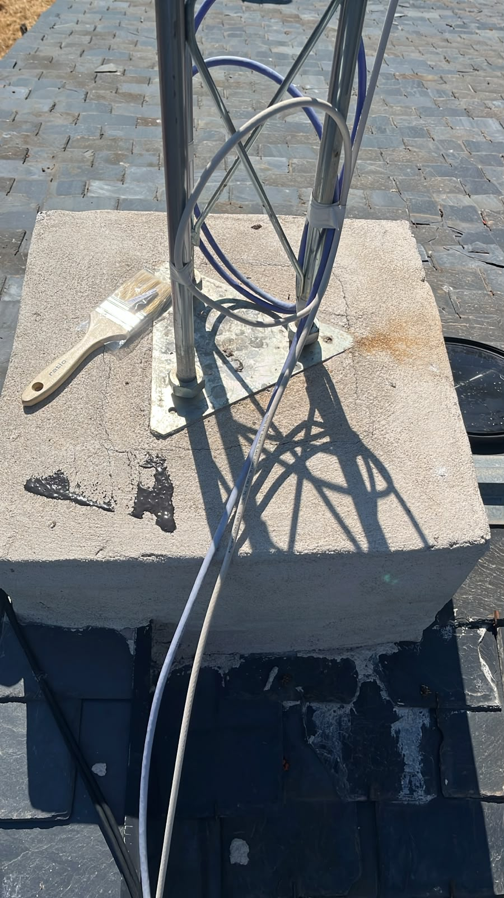
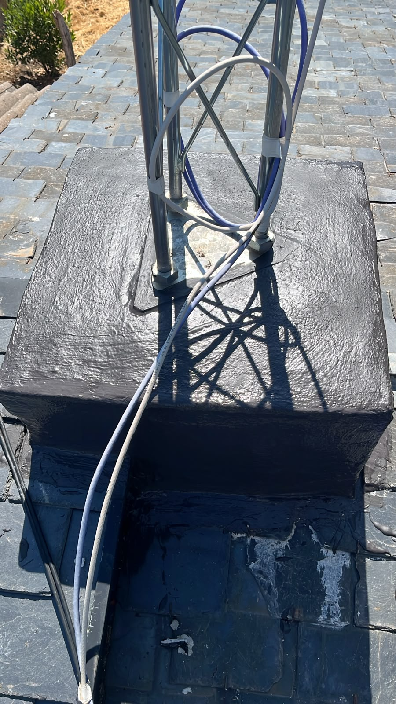
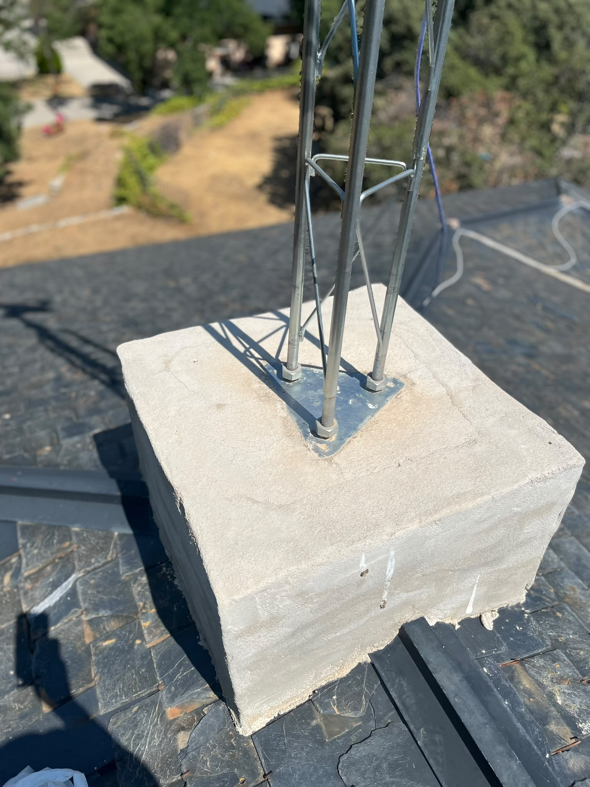
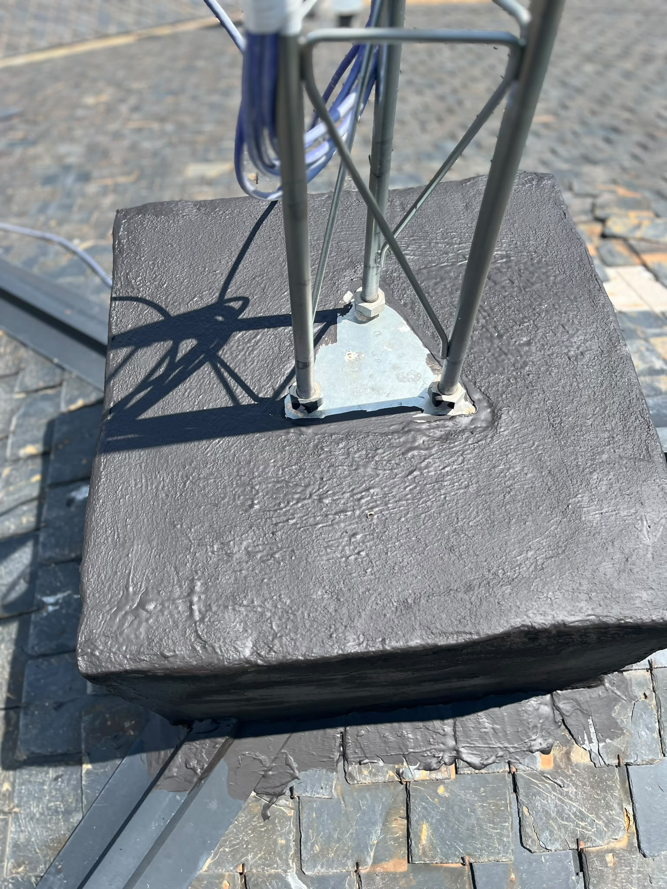

Pedir presupuesto →
Pedir presupuesto →
Las bases de las torretas TDT de un edificio en Madrid estaban generando filtraciones de agua hacia el interior. Con el paso del tiempo, la falta de sellado en los anclajes provocaba humedades que afectaban a la estructura y a los vecinos de las últimas plantas.
TEF realizó la impermeabilización completa de las bases de las torretas: limpieza de la zona afectada, aplicación de material sellador de alta resistencia en los anclajes y tratamiento de los puntos críticos para garantizar la estanqueidad a largo plazo.
Filtraciones eliminadas por completo. Las torretas quedan correctamente selladas y protegidas frente a la lluvia y la humedad, sin necesidad de obras mayores. El edificio recuperó la estanqueidad en un solo día de trabajo.



